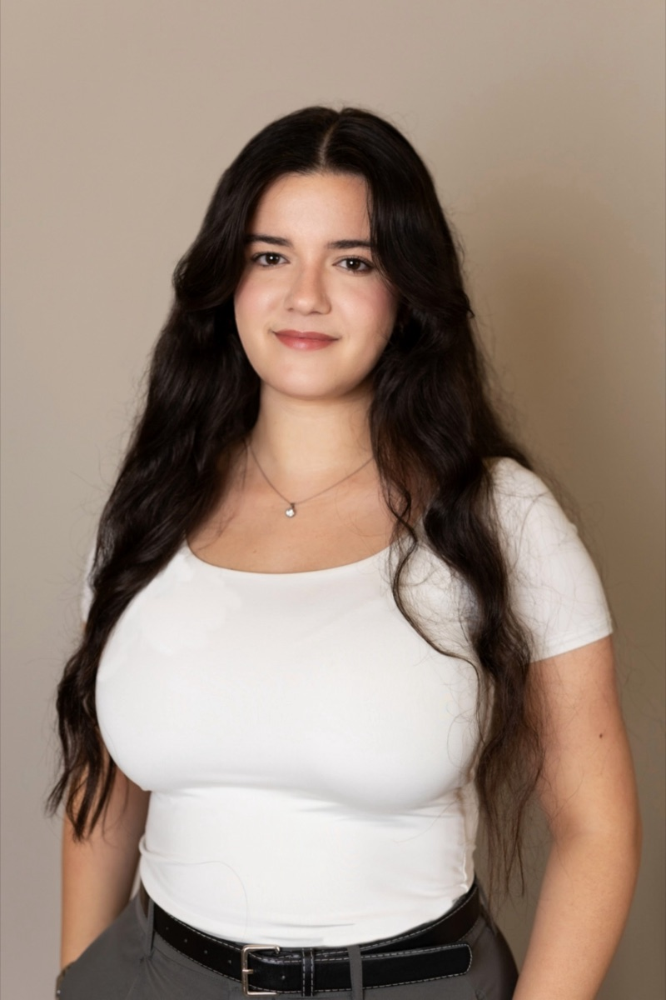

Hi I’m Adel
Hi! I’m Adel Fitoussi, a Visual Communication Design student at Bezalel Academy (Class of 2027).
I was named to the Dean’s List in my second year (2025) and have two years of experience in graphic design and motion design.
I’m a hardworking person, a team player, and always excited to learn and explore new tools and creative possibilities.
In the past, I worked in the Design Department at the State Comptroller’s Office, and I’m currently working as a Motion Designer at the Motion & Creative Department at Facetune by Lightricks.
I love telling stories through motion and movement, discovering new tools, and of course, creating and designing things! :)
